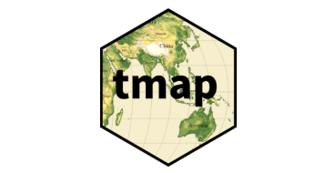

tmap version 4 released!
tmap version 4 has now been released, and is now available on CRAN. It has a whole range of new features, which we will explore in this blog post.

If those words above mean nothing to you, a quick recap: tmap is a library used in R to make maps. I use it in my Introduction to Spatial Data and Using R as a GIS training course so if you have attended one of those, you have already used it. If you are interested in learning more, check out my Training Courses or my Training Materials
tmap’s maintainer, Martijn Tennekes, has been working on v4 for a number of years, and has quite a few changes under the hood.
From our point of view (people who are new-ish to R, and/or tmap) the code to make maps has changed slightly. Martijn has put in a lot of ‘helper’ information for people transitioning from v3 to v4, so all your code will still work.
For basic maps, qtm() hasn’t changed at all; although you will notice that the defaults have changed:
qtm(sthelens, fill="Burglary")
qtm(sthelens, fill="Burglary")
Similarly, tm_shape and tm_polygons are the same for a basic map, but again the defaults have changed.
However, when you get to doing slightly more advanced things with tm_shape, for example specifying colours, the code has changed slightly:
tmap v3:
tm_shape(LSOA) +
tm_polygons("Age00to04", title = "Aged 0 to 4", palette = "Greens", style = "jenks") +
tm_layout(legend.title.size = 0.8)tmap v4:
tm_shape(LSOA) +
tm_polygons(fill = "Age00to04",
fill.scale = tm_scale_intervals(values = "brewer.greens", style = "jenks"),
fill.legend = tm_legend(title.size = 0.8))One specific thing of note is that there is a much wider selection of colour pallets available than the Brewer pallets. As such, we now need to specify brewer.greens rather than just Greens. However we do get a handy note if we forget:
[cols4all] color palettes: use palettes from the R package cols4all. Run
`cols4all::c4a_gui()` to explore them. The old palette name "Greens" is
named "brewer.greens"
Multiple palettes called "greens" found: "brewer.greens", "matplotlib.greens".
The first one, "brewer.greens", is returned.
Martijn has designed the library to be backwards compatible, and if you do try using some v3 code with v4, it will still run and create your map, and give you some handy advice:
tm_shape(LSOA) +
tm_polygons("Age00to04", title = "Aged 0 to 4", palette = "Greens", style = "jenks") +
tm_layout(legend.title.size = 0.8)
── tmap v3 code detected ────────────────────────────────────────────────
[v3->v4] `tm_polygons()`: instead of `style = "jenks"`, use fill.scale =
`tm_scale_intervals()`.
ℹ Migrate the argument(s) 'style', 'palette' (rename to 'values') to
'tm_scale_intervals(<HERE>)'
[v3->v4] `tm_polygons()`: migrate the argument(s) related to the legend
of the visual variable `fill` namely 'title' to 'fill.legend =
tm_legend(<HERE>)'Additionally, when dealing with the layout, legend and so on, things are a bit different:
tmap v3:
tm_shape(LSOA) +
#Set colours and classification methods
tm_polygons("Total", title = "Total Population", palette = "Greens",
style = "equal") +
#Add scale bar
tm_scale_bar(width = 0.22, position = c(0.05, 0.18)) +
#Add compass
tm_compass(position = c(0.3, 0.07)) +
#Set layout details
tm_layout(frame = F, title = "Liverpool", title.size = 2,
title.position = c(0.7, "top"))tmap v4:
tm_shape(LSOA) +
#set column, colours and classification method
tm_polygons(fill = "Age00to04",
fill.scale = tm_scale_intervals(values = "brewer.greens", style = "jenks"),
fill.legend = tm_legend(title = "Aged 0 to 4", size = 0.8)) +
#add scale bar
tm_scalebar(position = c(0.1, 0.1)) +
#north arrow
tm_compass(size = 1.5, position = c(0.1, 0.3)) +
#Set title details
tm_title("Total Population of Liverpool, 2021")All of this redesign is in aid of better flexibility. For example, in v3 we were limited to tm_polygons(), tm_lines(), tm_symbols(), and tm_raster() (and their derivatives such as tm_borders() and tm_dots()). But with v4, these are easily extendible - so we can have things like tm_cartogram(), tm_donuts() and so on. Many of these are still in development but it opens up a much wider range of options.
In terms of how we show maps, v3 had plot and view modes, but this new framework makes it possible to add other modes as well.
Equally, tmap is based on sf and stars, but the new framework will make it easier to work with other spatial classes, such as SpatRaster and SpatVector from terra.
A nice overview for those already familiar with tmap is at http://mtennekes.github.io/tmap4/ (originally posted in 2021). The website also had a new range of tutorials under Basics and Advanced which are in the process of being developed.
The fact the tutorials (and the whole website) are built using pkgdown means that it is very easy to open the relevant page on GitHub and make changes. For example, I added a fixed breaks example to the Basic Scales page.
This also featured at the FOSS4G Code Sprint (Brazil) where Andrés Duhour and I updated the ggplot2 comparison article.
If you want to learn how to use tmap, do have a look at my Introductory or Advanced GIS training in R, or if you have any questions, please do contact me.